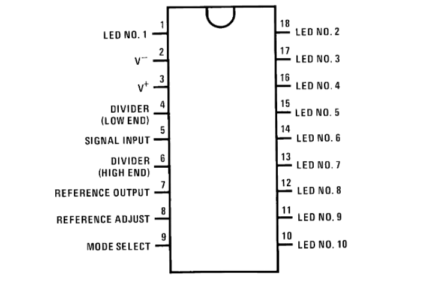
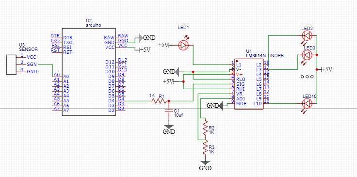

What is this project about?
This project is designed to calculate the number of engine
revolutions per minute using Arduino and lm3914.
What was used for the project?
In order to accomplish the project I needed to know how to:
- calculate engine rotation
- work “RC” integrator
- work LM3914 logic elements
- work IR obstacle sensors
For that I used:
- MH-B IR obstacle sensors
- Arduino
- LM3914
- Resistors
- Capacitor
What was the process to achieve my goal?
I decided to collect information from the sensor using Arduino.
Arduino calculated the revolutions and sent a PWM signal.

Code in Arduino
unsigned long int rot =0;
unsigned long int lastrot =0;
unsigned long int tm;
unsigned long int spd =0;
unsigned long int rpm =0;
unsigned int dt =0;
int OutPut = 9;
int rpm_array[5] = {0,0,0,0,0};
void Detect()
{
rot++;
lastrot = rot;
dt = millis() - tm;
if(dt >= 100)
{
spd = rot*60000/dt;
rot = 0;
tm = millis();
}
}
void setup()
{
attachInterrupt(0, Detect, RISING);
tm = millis();
Serial.begin(9600);
}
void loop()
{
rpm_array[0] = rpm_array[1];
rpm_array[1] = rpm_array[2];
rpm_array[2] = rpm_array[3];
rpm_array[3] = rpm_array[4];
rpm_array[4] = spd;
rpm = (rpm_array[0] + rpm_array[1] + rpm_array[2] + rpm_array[3] + rpm_array[4]) / 5;
analogWrite(OutPut,rpm/5);
Serial.println(spd);
Serial.print("/--------------/");
Serial.println(spd/6);
delay(300); }
Then I connected the PWM signal through the RC filter to the LM3914
And finally, I show the signal on the LED display.

Project Result